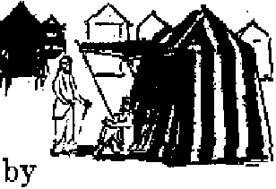
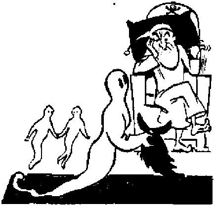
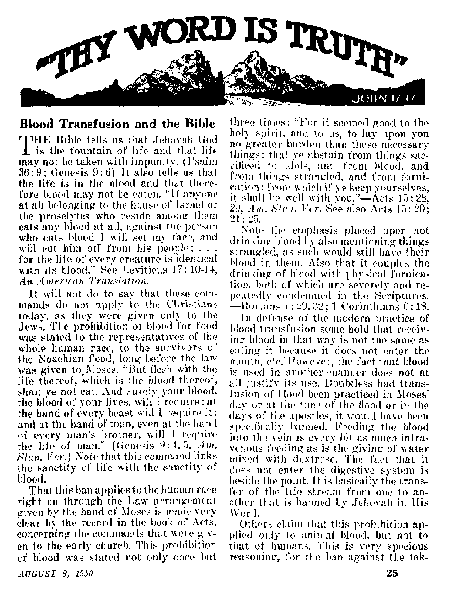
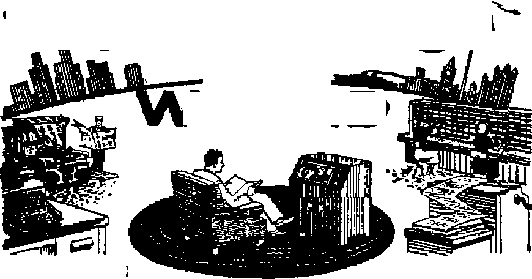

Its Prevalence, History and Methods Its Risks, Rackets and Alternatives
The tragedy that comes in the wake of war
Nature’s capital city
AUGUST 8, 1950 semimonthly
THE MISSION OF THIS JOURNAL
News sources that are able to keep you awake to the vital teaues of our. times must be unfettered by censorship and seffisfi interests. "Awake I** has no fetters. It recognizes facte, faces facts, la free to publish facts. It is not bound by political ambitions or obligations; it is unhampered by advertisers whose toes must not be trodden on; it is unprejudiced by traditional creeds. This journal keeps itself free that it may speak freely to you. But it does not abuse its freedom. It maintains integrity to truth.
** Awake Is* uses the regular news channels, but is not dependent on them- Its own correspondents are on all continents, in scores of nations. From the four comers of the earth their uncensored, on-the-scenes reports come to you through these columns. This journals viewpoint is not narrow, but is internationaL It is read In many nations, in many languages, by persons of all ages. Through its pages many fields of knowledge pass in review—government, commerce, religion, history, geography, science, social conditions, natural wonders—why, its coverage is as broad as the earth and as high as the heavens.
“Awake 1” pledges itself to righteous principles, to exposing hidden foes and subtle dangers, to championing freedom for all, to comforting mourners and strengthening those disheartened by the failures of a delinquent world, rejecting sure hope for the establishment of a righteous New World.
Get acquainted with “Awake I” Keep awake by reading “Awake!’*
Published bkmimonihlv St watchtower bible and .tract SOCIETY, INC.
117 Adame street Brooklyn 1, N. Y., U. S. A.
N. H, K^orr, President (Jkaxt SnrrRR, tStawvtarjr
Fiv« cent* a copy On* dollar • year
ihonld be sent t* rfks in jouf dun-Lrj In MoipUaitca with ntfUUUau co rn*r*ht« safe deliverr al ihom?. RamitUnces are accepted at BrMtlyD from ctumirieB where po tWUce li Lccaied, by IbUroaUonal mow arttj’ only. SubBcrlpUon rates la JlBiretit couutrta m here suled la local cnmreiMy
mrflrt of trtfrvfM (rltb ftwil Wsnk} h te« al kut :wq Juues bcfare mtncriptlon
Ealertd «p McomLdisa mttkr at BconUya. 5.
Chan®* at addrm when petit to our dD« be expected rftrilue within one nioutb. Send four aid ae well as new address.
Offices Yearly Subscription Bate
Amerl», U-S.r 117 Adama St., Brooklyn 1, NA. |i AUtfalla, 11 BerMfmd Ed., SiralbteM, NSW. Op Canada, 4ft Irwin Ave.p Toro bib 0, Ontario 11 31 Craerfi Twrirt. I/huIad. W 2 4*
gnth Africa, 923 Bratcn Haiba, Cape Town 5i
r., Act rf Mirth 3, 1B7&. Priaustl la IL S- A.
CONTENTS
Blood Transfusion Therapy—Its Prevalence, History and Methods
Typing Blood
Blood Transfusion Therapy—Risks, Rackets and Alternatives
Death from Transfusions
Diseased Blood
Commercial Traffic in Blood
Plight of the Palestine Refugees
Sunlight Batteries
Tropical Tales of Women
True Identity of the “Apelike Men”
3
6
8
8
9
10
13
15
16
16
Midnight Marriage in British Guiana! 17 “Drift Toward a Shooting War”
The Grand Canyon—Nature’s Capital City 20
Mix-roCost for Greatest Microscope
“Thy Word Ib Truth”
Blood Transfusion and the Bible
Chocolate—from Seed to Candy Bar 27
®™Now it is high time to awake.—Romans 13:11 9j
Volume XXXI
Brooklyn. N. Y-, Auguat 8, 1950
Number 15
BLOOD TRANSFUSION THERAPY
Its Prevalence, History and Methods
MANY are the philanthropic movements that make appeals to our neighbor love. This worthy cause and that, we are told, deserve support. Periodic campaigns are put on by the Red Cross, the Salvation Army, the Community Chest. Then there are those primarily concerned with health: the Cancer Fund; the Tuberculosis Christmas Seals, the "March of Dimes” for the sufferers of infantile paralysis, etc.
That all may understand the many aspects to consider In regard to blood transfusion, the “Awake!*’ magazine Is herewith pubUshlng a series of three articles on the subject. These will take up the following points; (1) prevalence, history and methods; (2) risks, rackets and alternatives; (3) the Scriptural position regarding the use of blood In transfusions.
Among such campaigns is one that has come to the fore especially with World War II. Sponsored by the Red Cross, it requests, not our money, hut our blood. And for what purpose ? To be used for blood transfusions, ostensibly to save the lives of others—those undergoing operations, those having had accidents or hemorrhages, those suffering serious blood diseases, and to build up a reserve of plasma to be used in the next war. By contributing our blood in this manner we will save the life of another, we are assured. And much blood is needed. Some hospitals use close to 1,000 pints a month; and in cities like London and New York upward of a quarter million pints are used annually. So, on the radio, in the public press and at public gatherings the theme is sung: "Brother, can you spare a pint?”
The politicians join in the refrain: "Mayor [O’Dwyer—New York] Urges Blood Gifts”; “Sing Sing Lifer Freed by Dewey, Traded Blood with Dying Child”; ‘'Marshall Warns of Emergency Blood
Need”; “Eisenhower Asks: Columbia Faculty and Campus to Give Blood” The entertainment world publicizes its part: the entire casts of two Broadway shows "Give Blood on Stage”. Fraternal societies "adopt” patients with serious blood diseases, supplying them with blood regularly; business firms, labor unions and educational institutions support the Red Cross “Bloodmobiles”.
Most conspicuous are the clergy: "Priest Asks Blood for 2 Ill Children”; "Four Clergymen to Talk on Blood Bank Program”; “Priest’s Plea Brings 150 Donors”; “Churches Aid Blood Bank”; “Red Cross Honors Cardinal”; “Cardinal [Dougherty] Is Cited for Blood Donor Aid,” and pictures show him receiving a certificate of appreciation from the Red Cross officials in recognition of his assistance to their blood donor program. And a Red Cross bulletin states: "most striking feature of the past year's [1949] blood bank program was the cooperation of the Catholic Church/"
While donations of blood in response to such appeals are limited to a pint at a time, many have donated blood repeatedly. Thus the Red Cross tells that of the millions that donated blood during World War II, 1,500,000 donated eight pints and 3,000, 16 pints, or two gallons; this giving an over-all average of two pints per donor.
One Man Gives Four Barrel*/
Nor have some been content to limit their donations to 16 pints. Foremost among such was “Spike” Howard, strong man of Philadelphia, Pennsylvania, who, over a period of thirty-five years (he died in 1946 at the age of 68), donated 1,100 pints of blood, or more than four barrels! He considered the highlight of his blood donor activity the time he donated five pints within a three-day period,,and during an epidemic he submitted to transfusions every day for six weeks. He had an “after-transfusion diet” consisting of three to four pounds of ground steer meat, spiced with salt, which he felt had something to do with his remarkable ability to manufacture blood.
In the front ranks of living blood donors, though far behind Mr. Howard, is S, Geo. P. Lesur, who received a medal for social merit from the French government upon his donating 135 pints. Among the foremost blood donors in the United States is a Catholic priest, Alexander Btitkowsky, of Poughkeepsie, New York. He is widely publicized for his corpuscle philanthropy, which has already exceeded one hundred pints. And other press reports keep telling of this one and that one giving fifty or more pints of the all-important stream of life.
Different countries have different ways of collecting blood. This was especially true during the last war. After the sneak attack on Pearl Harbor, civilian traffic violators were given the choice of paying the fine in dollars or with a pint of their blood. In Germany and in German-occupied countries the people were forced to give blood, in typical Nazi fashion. This caused riots in many parts of Poland. And Russia hit on the happy and practical idea—most repugnant to other lands though—of using cadaver blood, blood of those who died suddenly and who had been apparently in good health. This is collected within eight hours after death. We are told that cadaver blood is used throughout Russia and that her largest casualty and emergency hospital uses nothing else. Russia also makes great use of placental blood (by the organ of communication between a mother and unborn child). At each childbirth from a half to a whole tumblerful of this blood is salvaged, and it is said that her foremost maternity hospital uses only this kind. In the United States there is some use of it, but primarily in making commercial products from blood. The blood that the mother loses in connection with the “afterbirth” is also used in Russia and elsewhere, but it is not nearly so valuable, besides involving the risk of contamination.
So blood has been and is being gathered from the people, at birth, during life and even after death; willingly and unwillingly, by democracies and by the totalitarians alike. Blood transfusion occupies a most respected place in this modern world as concerns almost everybody except . . . Except whom? Except Jehovah’s witnesses, who are in but not'a part of (Ik's wo rid.—John 15: W; 1#: M
History of Stood Transfusion
Of course, being so different in so many other respects it is not surprising that Jehovah’s witnesses should not follow the way of this modern world in regard to blood transfusions.' But why, you ask, do they have nothing to do with it? Can it be that they are not as much concerned with the welfare of their neighbors as others are? Hardly that, for no class of people are so ready to help out as they; in fact, no other class are so fully devoted to unselfish service as they are, Then can it be that they have scru-plea against the practice of blood transfusion? Yes, they do. And why? Because they feel that blood transfusions involve needless risks, or because they are convinced that the transfusing of blood is contrary to the teachings of the Bible? Briefly the answer is: Primarily because they are convinced that the Bible prohibits the use of blood in any form and in any manner by one of another. For a brief consideration of this aspect of the subject please see the article under the heading "Thy Word Is Truth”, on page 25. True, there are risks that should not he overlooked and which will be dealt with at length in this issue of Awake! However, solely on the basis of such risks Jehovah’s witnesses would not make an issue of blood transfusion.
To get a complete and rounded out picture of blood transfusion therapy it seems well to briefly review its history and its methods.
Many people who have no aversion to having a pint of blood transfused into their veins would be quite squeamish about drinking a pint of human blood. But, whether we like it or not, transfusion of blood is the same as eating it, for by means of it the blood of one individual is used to nourish and strengthen another. In fact, there seems to be a measure of inconsistency in this matter, for when glucose solutions are injected into the blood it is referred to as intravenous feeding, and exactly the same method is used today in blood transfusion.
Long before man transfused blood he was taking it by mouth, both animal and human blood. The Bible tells of the drink offerings of blood. (Psalm 16:4) Secular history tells of warriors who drank the blood of those they had slain in battle, hoping thereby to gain the prowess of their victims. Others drank it for medicinal purposes.
In 1492 the physicians of Pope Innocent VIII tried to cure him by means of the blood of three youths whose lives it cost. However, their methods were not successful, and it is stated that the medical gentlemen involved were rewarded for their pains by being executed, with the exception of one who fled the country. Although this is often cited as the first case of attempted blood transfusion, such is doubted by the foremost living authority on the subject (Wiener).
Early in the sixteenth century the idea of blood transfusion was suggested by a physician, and in 1615 one even described in Retail how this might be done, by having the blood flow from one to another by means of tubes. Although there is no record that he tried it himself, yet it is essentially the same method that is still used at times. After many experiments on various animals, with fatal results, a successful transfusion was made between two dogs in 1665.
A few years before, Dr. Denys (Denis), of France, experimented in transfusion in a human, he giving nine ounces of lamb's blood to a lad who was suffering with anemia. As the lad did not die, but got well, Denys was credited with performing the first successful blood transfusion upon a human. However, one writer on this subject observes that what saved the lad was not the transfusion of lamb's blood, but the fact that Dr. Denys did not continue bloodletting the patient, which was so customary in bis day, and because of which the lad suffered from anemia. The amount of lamb's blood, while not doing him any good, was not sufficient to harm him. So the doctor “received applause which should rightly have gone to nature for providing man's body with efficient blood-manufacturing facilities”. Or, as Jehovah’s witnesses would say: “Credit should have gone to the great Creator, Jehovah God, for providing man with such efficient bloodmanufacturing facilities!”
Incidentally, this bit of medical history shows the irony associated with the faith that men put in recognized medical practice: A patient is made worse and laid low with anemia by reason of the doctor's following the customary practice of the day—bloodletting. Another doctor steps in who stops this waste of the body's vital fluid. But, not content to let it go at that, he administers what could have been a lethal potion had the patient been less robust or the amount larger. So, because the patient survived in spite of the doctor’s mistake, the doctor is hailed as the first one to perform a “successful” blood transfusion in a human!
Dr. Denys tried a few more blood transfusions, one of which was in a syphilitic patient and which had fatal results. The wife of the patient sued, claiming that the doctor had poisoned her husband. (And so he had, although not with any poison, but with lamb's blood.) The court, while exonerating him, forbade further blood transfusions. Later the practice was also banned by the French Parliament, the English government and by the pope (1675).
Typing Blood
Early in the nineteenth century interest in blood transfusion therapy revived and men began to use human blood. By 1900 blood transfusions were being used more and more, but generally only in extreme eases, as about half of them resulted in fatalities. The doctors in those days simply could not understand why the stream that gave life to one individual should cause the death of another when transferred to his circulatory system. Experiments had finally established that while fatal results followed when the blood of the various animal species was mixed, there were no untoward reactions when the transfusion was between dog and dog, cow* and cow, etc. But why were transfusions between human creatures not equally successful?
This question was largely answered by Landsteiner (Viennese Nobel prize winner) in 1900 by the discovery of certain factors which cause the agglutination of the red cells. This "gluing together” wag found to be caused by two distinct factors in the serum known as agglutinins and two factors in the red cells which were called agglutinogens. By this discovery all people were divided into four classes. Those whose red cells had agglutinogen “A” belonged to group A; those whose cells had the agglutinogen “B” belonged to group B; those whose cells had both were placed in group AB; and those whose cells bad neither were labeled group 0. The agglutinins of the serum were found to he distributed in a similar manner, enabling a double check to be made as to the compatibility of the bloods involved.
Later two subgroups were found, making six in all. In 1927 the “N” and “P” factors? were found, and later still more subgroups. But even with the greatest care in classifying all these blood groups unfavorable symptoms and even deaths resulted from blood transfusions.
In 1940, after years of experimenting on various animals in efforts to develop a scrum that would detect further blood groups, Landsteiner (pioneer in blood grouping) and Wiener (present foremost authority) discovered another element, the Rh factor, which divided all the race into two more classes. This was so named because it was first located while experimenting with rhesus monkeys. Tests showed that about 85 percent of the white race have this factor, and were therefore called Rh positive, the rest not having it, Rh negative. Tests today are generally limited to the four main AB groups, two of their subgroups and to the Rh factor.
While sex has no bearing on these factors, difference in race does reveal variations in the numbers of the various groups. All these factors are hereditary, following the laws discovered by the
Austrian monk Mendel. Because of this they are gaining more and more recognition in legal circles, often helping to solve a murder or the question of disputed parentage.
In view of the many groups, main and subgroups, the Americana states that at least 400 different classifications are theoretically possible. Not content with this, Wiener, in discussing the over-increasing number of groups that are being discovered, savs that “an individuality of the blood reminiscent of the fingerprints is conceivable”, and adds that Landsteiner was also of this opinion. In other words, it is conceivable that each individual has his own type of blood, and that it could he distinguished from that of anybody else.
Another obstacle which long plagued the blood transfusers was the coagulating characteristic of blood. As is well known, as soon as blood comes in com tact with the air it begins to clot, and clots entering the blood stream might easily prove fatal, especially if they got into the heart chambers. In 1914 this problem was solved by the discovery that sodium nitrate prevented the clotting of blood aud had no bad effects on the heart. Since then all blood is “nitrated” as it is taken from the donor, which also helps in storing it. Dextrose is also added.
Transfusion Methods and Blood Fractions
In transfusing blood a number of different methods have been tried, some of which have proved to be more practical than others. Oldest and most difficult was the “direct” method, in which the two veins were sutured (sewn together). This method is no longer used as it does not permit repeated transfusions. Then came the “semidirect” method whereby the veins were joined together with a quill or tube. In . some instances this method is still used. Most prevalent today, however, is the “indirect” method whereby the blood is first collected in a jar and then fed to the patient drop by drop into a vein. Recently another method has come to the fore whereby the blood is pushed into an artery by air pressure.' This method is used when speed is considered important, as by means of it a pint enters the body in a minute and a half iustead of the halfhour that the drop by drop method takes. (It usually takes seven minutes to obtain a pint from a donor.)
Experts claim that stored blood begins to deteriorate after the fourteenth day, although generally it is used until the twenty-first. Because of this perishable nature of blood, dried plasma (blood from which both the wuiter and the cells have been removed) is frequently used, especially in time of war. It also has the advantage of not requiring typing.
Among other elements that are separated and used are serum albumin; the gamma globulins, which contain the antibodies that fight disease; fibrinogen, the blood’s prime clotting agent; etc. These are made into powders, sponges, paste, plastic and tissue, all exploiting their original functions in the blood.
How much blood is used in a single case? This varies a great deal, ranging all the way from a few ounces for an infant to more than 30 pints during the course of a major operation in an adult. Those having serious blood diseases often receive from two to four pints a month, some children having already received from 400 to 500 pints of blood.
So much for our background of the prevalence, history and methods of blood transfusion, in the article following we consider some of the risks involved.
Blood Transfusion Therapy
RISKS, RACKETS, AND ALTERNATIVES
Regardless of the method used, blood transfusion has ever been accompanied by risks. Many are the lives, both of animals and men, that have been sacrificed in experiments of transfusing animal blood in animals, animal blood in man, and human blood in man. That risks are still involved is freely admitted by the foremost authority (Wiener) on the subject:
Since blood transfusion therapy involves a certain though only a slight risk, it must not be employed without definite indication. Unfortunately, this principle is not always followed. Patients are being transfused because of general debility, due to various causes . . . with results not worth the effort or even detrimental. In cases of acute leukemia [disease of white corpuscles'! or carcinomatosis [multiple cancer] the family should be informed of the inevitable outcome rather than be subjected to the expense of a therapy which can at best prolong a miserable existence for a short time.
Danger lurks in such simple matters as the speed with which the blood is given and the amount, especially in heart cases. Hemoglobin contents of blood must be considered. Equipment must be kept aseptic (fully sterilized). Some even recommend giving only a few cubic centimeters of blood at first, and if no untoward symptoms are noticed' then to continue. Of course, if the patient is unconscious such unfavorable symptoms would not Be noted. Blood transfusion should be halted at the first appearance of any unfavorable reaction. .
Blood stored too long may prove worthless or even dangerous. In fact, in $ome cases only fresh blood should be Used, as noted in the New York Times of May 19,1950: “Using Fresh Blood Vital in Maternity. Research Shows Stored Fluid May Lose Clotting Agent, Causing Toxemic Fatality.” Still more serious are the errors in typing blood. Regarding these risks Dr. Wiener further states:
Positive reaction may be missed if the mixture ... is not observed for a long enough time, such as due to the haste incident to an emergency biood transfusion . . . blood of newborn infants may be of low sensitivity, the same is true of stored blood. However, even with fresh blood taken from adults false reactions have been obtained and one of the most common errors is to confuse “AB” blood of subgroup “A2B” for group “B” on account of weakness of activity ... In certain types only careful workers will succeed in making correct analysis.
Also acute infections, bacteria, pregnancy, malignancy (such as cancer) will play havoc with tests, we are told.
Death from Transfusions
Dr. Wiener also relates the case of a donor whom he typed as “AB” who told him that he had on three previous occasions been classified as “O”, which is just, the opposite. (“AB” indicates possession of both agglutinating factors injurious to other blood cells, whereas those having “O” blood are termed “universal donors”, as their blood has neither of these elements.) Upon investigation it was found that in one of these three previous donations the mistake had been discovered and the blood cells separated and only the plasma used without any serious consequences. And in the other two eases 1 In one the patient receiving the blood died four hours after the transfusion, and in the other four days later. Circumstances accompanying their dearths left no doubt in his mind that they were due to hemolysis (destruction of red cells by incompatible serum), but in neither case did the attending physician even suspect that such was the case. The
operation was blamed for one death, the disease for the other. Regarding this failure to properly identify such causes of death Wiener further states:
If fatalities occur after several days from uremia caused by hemolytic reaction, the connection between the death and the transfusion may not be recognized. This explains why, until recently, deaths from uremia following blood transfusions, particularly in pregnancy cases, were erroneously believed to be due to complications of pregnancy, such as toxemia, rather than to transfusion."
A Dr. Frank Lahey, in speaking at an American Medical Association session in Atlantic City, New Jersey, in 1949, also stressed the dangers of mismatched blood “when laboratory tests are not sufficiently complete or carried out with meticulous care”. And in the New York Times of April 2, 1950, a Dr. N. C. Kiefer was quoted as saying that blood was “a commodity that can be lethal unless it is collected and transfused with strict conformity to complex safety standards”.
Among the most serious forms of mistyping is the mixing of the Rh positive with the Rh negative, and especially in the case of women. According to two doctors at the Johns Hopkins Medical School and Hospital, “the danger is that Rh negative women and little girls may be sensitized through hlood transfusion with Rh positive blood. Then if they marry Rh positive men, their babies will be born with severest form of erythroblastosis [a disease of the red blood cells] and usually will not survive.” As an example of this they cite the case of a 'twenty-two-year-old woman whose first baby was jaundiced five hours after its birth because of anti-positive substances in its mother’s hlood. The anti-Rh substances developed as a result of a transfusion of about five ounces of blood when the mother herself was a two-month-old baby suffering with dysentery.
At the Johns Hopkins Hospital cases of this dread malady have increased fivefold in recent years, matching exactly the
AUGUST 8, X9.W
rate of increase in blood transfusions. Since the percentage of Rh negatives in the population is fixed, never more or less than 13-15 percent, the increase must be due to an increase in the number of women sensitized to Rh positive blood because of blood transfusions, the doctors held.
In this connection it is of interest to note that a man was awarded a judgment of $9,000 because of the death of his vtife, which occurred, two days after she had received a blood transfusion. A postmortem examination revealed that she was Rh negative whereas she had been given Rh positive blood.
Diseased Blood
Equally as great a risk if not greater than that of mistyping of blood is diseased blood. Regarding blood donors, the authority Wiener states that their “health must be perfect”. An article appearing in the January 29,1950, Sunday Bulletin, of Philadelphia, Pennsylvania, states:
What many sincere donors don’t know, however, is the fact that blood that is not free from germs may cost the life it was meant to save. For this reason each person who gives blood should be completely honest in telling about the diseases he has had. Each attendant at a blood bank must be meticulous about records and blood tests. ... At one time an investigation showed that almost five percent of the blood collected by one of the leading blood banks was contaminated with the hepatitis virus [a dread liver malady].
After telling of a young girl wTho was given a blood transfusion after an, accident and as a result had a liver ailment that took her longer to recover from than from the accident itself, the article continues:
Various types of viruses, including those of influenza and infantile paralysis, might be present in blood or plasma intended for transfusion, unless the greatest vigilance is exercised. Similarly, such blood or'plasma might carry germs causing malaria and other dis-
9
eases. Or, it might contain aUergy-proddcing substances, called “allergens”. Such substances might cause hives, asthma, or hay fever , . . The virus of hepatitis, or other viruses, cannot be observed under the microscope. This makes such infection a greater hazard than that from bacterial organisms which arc more easily detected,
The danger that lurks in the transfusion of diseased blood is further emphasized by the news report which told of the widow of a war veteran suing the government for more than $175,000 because he died from a transfusion of blood which she claimed was jaundiced. Emphasizing this risk also, a writer in the Saturday Evening Post for March 25, 1950, tells that this hepatitis virus is one of the hardest to kill and that an individual may have it for five months before he becomes so sick as to bo aware of its presence. Because of the delayed appearance of ill effects, as well as the prejudice in favor of transfusions, the blood transfusion seldom gets blame it deserves.
In view of all the factors that must be considered in the transfusion of blood: the exact amount; the speed with which it is injected; the aseptic (sterile) condition of the equipnumt,' the accurate typing of the many groups; and the danger lurking in contamination of blood —is it not understating the matter to say that there is a "'slight risk involved"?
Commercial Traffic in Blood
And if, even with complete honesty, so many risks are real and present because of the human factors of negligence and forgetfulness, what shall we say as to the risk when circumstances cast a suspicion on the honesty of those involved, because the blood is bought and sold? That people do sell their blood, and that for all kinds of reasons, is everyday news: "Blood Balances City Debt”; “School Boys Sell Blood to Raise Easy Money”; "Church Members Pay for Remodeling Church with Blood”; "Father Sells Blood to Ease Family's Hunger.”
Those ate just a few of the headlines.
And what about the risk involved when blood banks are willing to take blood from literally anybody and ask no questions? Note this report of a columnist for the New, York Mirror of March 6, 1950:
About every three weeks David D. Cohen sells a pint of his blood. . . . We visited three blood banks. They firmly refused to allow me to take any pictures. ... At the first there must have been over 100 people sitting around on wooden benches waiting their turn, mostly men and boys, shabby, beaten, hungry, with unseeing eyes and faces of tallow grey. . . . “They don't give you much of an examination here,” said Dave. “They just check your heart and blood pressure, and don’t ask any questions." . . .
The second blood bank further downtown wasn't crowded at all. The guard at the door said that's because it was so cold. “But on Saturdays we get them a yard deep," fie added. “This place supports a lot of bars. Go over to that one on the corner. The bartender will tell ypu. Every Saturday he picks about eight of them off the Jioor. They just keel over." . . .
[At the third bank | a very nice doctor said that there was no way to keep the eight week rule and no way to check whether a donor was [ving about having malaria or asthma. He said that blood banks get. a. standard $15 a pint from hospitals.
According to a recent patient at one of the more prominent New York hospitals, rates for transfusing a pint of blood wore: $50 for private-room patients, $40 for sen lipri vat e patients and $30 for those in the wards. The Bowery bum gets $5; the blood bank sells it for j$15; the hospital gets $30 to $50.
Nor is this racket limited to NeW York city. Ger clear across the continent, and what do we find? The Los Angeles Mir-ror of January 31, 1949, tells us:
BLOOD FLOWS ON SKID ROW Bi/xjd Mill Drains Poor L. A. Flotsam Exploited
There is a million-dollar red river of blood flowing through Los Angeles. Its source is the human junk pile of Skid Row. It ends in reputable, high-class hospitals all over the city Who reaps the profits to be gleaned from Society’s castoffs who have nothing left to sell but their blood? Is it diseased? Are sick people in hospitals pumped full of rotten blood taken from the dregs of humanity? The buying price in Los Angelos'' Hell’s Half Acre is $4 a pint. The selling price to the hospitals is $25 a pint. Who gets the $21 profit?
Half a dozen “blood banks” in Skid Row daily run hundreds of winos, drunks, degenerates and bums through the blood mill. . . . One man has already traded his life for the pitiful $4. . . . How many more of these men have perished for someone’s $21 profit? Or who knows how many innocent people in hospitals have died from transfusions containing contaminated blood?
Yes, who knows? No one! Blood is an unknown quantity. It is like adeepting a coin and not having any way of determining whether or not it is counterfeit. And if errors in typing blood arc seldom blamed for the harm they do, it is still less likely that diseased blood transfusions will get their share of blaine. Statistics will never reveal the facts! But a tacit admission of this danger is seen in the statejnent of some Harvard doctors some time ago (1947) to the eilect that among those whose blood should not be used for transfusions are those who have received blood transfusions themselves or any kind of blood products.
AVI)at shall we say of the politicians who so loudly encourage blood transfusions but do nothing to stop such rackets? Of the medical fraternity in the reputable, high-class hospitals that are willing to take such chances with the1 lives that people entrust to their care? Of the sordid selfishness of the men that operate those blood banks? Yes, and of the miserable wretches that are willing to give disease to another just so they can “play the horses", keep a date, or get drunk? And one and all ignoring the dictum set forth by Dr. Wiener: "‘health must be perfect/’
The Alternatives
But perhaps you think that it is better to risk diseased, mistyped, unsanitary, stale, too much blood, etc., than certain death because of failure to have a blood transfusion. What are the comparative risks? Are blood transfusions “musts” or are there alternatives? and if so, what are they?
First of all, note what the system itself docs when it sustains loss of blood because of hemorrhage, accident, etc. Is the loss small? Then fully formed red cells, lield in reserve in the bone marrow for just such emergencies, rush out, replenish the supply, and there is no disturbance. Is the loss of blood large? Then a number of factors go to work. Fluids from the tissues and stomach enter the blood stream giving it the needed quantity so that the heart can keep up blood pressure. The patient feels thirst, calls for water and the moisture is replaced. Bipod cells rush out as need requires^ some not yet matured and oven some with their nuclei. (Something like a country at war using boys to fight after its manpower reserve has been depleted.) The sympathetic nervous system helps by causing the heart to beat faster and the blood vessels to constrict, thus helping to make the reduced supply of blood serve1 the purpose of life. And if the loss, is still greater these activities arc speeded up still mon1.
And what about outside help? Pectin and water has been used time and again instead' of blood without any cases of surgical shock after the operation. In 1916 a Dr. Bayliss reported using a six-percent acacia gum in a saline solution a thousand times without a single unfavorable result.
In 1947 the New7 York Tinies told of the report, of a retired Chemical Corp commander on “Periston”, a chemical substitute for blood plasma that the Germans had used during the war 300,000 times and on 40,000 different patients. The Ante rican Medical Association was studying the matter, but nothing more haa been heard of it since.
Under the heading "New Blood Aid Described”, the New York Times of November 30, 1949, reported a Mayo Clinic doctor as saying: "Dextran, aside,from its low cost, avoids some of the untoward effects of plasma in comparison with the use of whole blood. It removes the complications of transfusions which have been increasing as more is learned about blood grouping.” Note carefully that last sentence: "It removes the complications of transfusions which have been increasing as more is learned about blood grouping.”
In describing the new transfusion method whereby the blood is literally pumped into the artery, Dr. I. Page, of the Cleveland Clinic Foundation, stated: "In emergencies plain tap water or water with salt in it has been used with success.” Yes, just "plain tap water or water with salt in it”!
In his book Adventures in Blcfod Transfusion Bernheim, telling of the treatment for surgical shock in days gone by, such as keeping the patient warm, etc., adds: "Especially intravenous injections of salt solutions had the effect of restoring the patient to consciousness." And regarding their use today he states: "Salt solution is still used and is of great service. But, like everything else, it has its limitations which must be recognized.”
Alonzo J. Shadman, M.D., of Forest Hills, Massachusetts, however, does not restrict them in any such way. Writing in The Layman Speaks, of June 1948, he states:
1 have practiced medicine and surgery for <3ver forty years and never yet have I given a blood transfusion, nor fractionated blood, for any purpose, and I have never had a patient any the worse for not having received it, 1 have h^d many, many patients who were bled cold from accidental loss of blood and an infusion of normal saline solution always saved them.
... I have seen patients turn over in bed and die following blood transfusions. 1 have never seen an untoward reaction from, a needed saline transfusion. There are as many types of blood as there are persons living on this planet.
The foregoing examples clearly indicate that there are valuable arid practical substitutes for blood when the system is dangerously low in that vital fluid-It also makes it appear that the medical profession in discarding the simpler and safer methods for the one involving the greater risks is in effect straining out the gnat of salt solutions, etc., and swallowring the camel of mistyped and diseased blood. They willingly ignore the body’s marvelous blood-manufacturing facilities and extol their complicated and dangerous blood transfusion thei*apy.
To sum up: We have noted the campaign for blood donors and traced the history of blood transfusion from its inception to our day. We have noted transfusion methods and the uses made of blood. We have presented some of the risks and shown that there is a sordid racket in the blood traffic that stinks to the high heavens. And we have seen that there are alternatives for blood transfusions, and involving far l&ss risk.
But this is not all there is to this story. The foregoing matter may he considered as controversial, and on its merits alone each one can be free to choose for himself whether to take or refuse blood transfusions. However, hlood transfusion is tantamount to drinking blood, and God, in His Word the Bi hie, has very dearly shown Christians His'will regarding this matter on three different occasions: immediately after the deluge, to Noah and his family; to the members of the typical Theocracy, the nation of Israel, by His spokesman Moses; and to the followers of Christ by the decrees of the apostles to the early church. For proof see details in another article, “The Bible and Blood Transfusion,” on page 25 of this issue.
Plight of the
PALESTINE REFUGEES
By “Awake!” correspondent In Lebanon
EVERYBODY hoped that after the second world war the time had come which would bring peace to all men, peace which would have left them in their homes, on their lands, so as to live in freedom and happiness. This apparently was too good to be true, for shortly after the silencing of the guns in World War II the Arab-Jewish hostilities for control and occupation of the land of Palestine began. During the time it raged, news of it hit the headlines daily. But now another conflict has come to an end* Yes, an uneasy peace has settled over the land. But the story does not end here, for out of this fight nearly one million Palestinian Arabs ivere made refugees. Another shame which must be added to this world’s infamous record is the tragic plight of the Palestinian refugees!
Let us consider some of the events which ivere the causes for a whole populace to leave its home and country. The close of 1947 found Jews and Arabs each steeled for the critical moment that would mark the end of the British mandate. The Jews launched a successful campaign to secure new and effective arms from Europe and America, In time the Arabs found themselves confronted by a strongly armed opponent whom they were unable to match with their own resources. Many of the richer classes began leaving for neighboring Arab states, chiefly Lebanon.
Following a few minor skirmishes, the cauldron of war suddenly boiled over on December 30, 1947* A Jew dropped a bomb near the entrance of a petroleum refinery in the city of Haifa, resulting in a terrific explosion and the death of some Arab workers. In a quick exchange of violence, Jews at the company’s head-
quarters were slain
angry Arabs, and Jewish terrorists slaughtered the total population of the Arab village of Dayr Yaseen. Fear gripped the land, and a second, then a third group of Palestinians fled.
Thousands beghn pouring out of Palestine, exhausting all means of transportation and crowding every road. Many who were in possession of commercial vehicles took advantage of these poor people by charging them outrageous prices in helping them leave. Others not so fortunate had to substitute with camels and donkeys for transporting their quickly gathered things. Thousands began to settle in Lebanon, Syria, Egypt, Iraq and Transjordan* Meanwhile the Jews made a swift attack on the city of Haifa on April 22, 1948, compelling all the non-Jewish inhabitants to flee the city in a short time, especially by the port of Haifa.
An Exodus in Panic
It was a pitiful sight indeed to see many thousands crowded at the port facing the,sea and waiting for boats to take them away. Fear and panic gripped the populace as each was thinking of himself or his own—when there was time to think at all. The boats transported this fourth group of refugees to the cities of South Lebanon. A boat would carry some members of a family and anchor at one port to discharge its contents, while another boat carrying other members of the same family unloaded them at a different port. It was a period of anxiety, agony and distress* Many families were scattered and broken up in the various countries. A fifth group fled Palestine' after the Arab armi.es failed in their liberation attempt. It is not easy to visualize the chaos caused by the displacement of virtually a million persons.
It is to be noted that there were three classes of people that left Palestine: the rich who managed to take some money with them, the middle or laboring class, and the poorest class with little of this world's goods. It is this latter class that presents the greatest problem.
On the arrival of the refugees, the Arab governments took upon themselves the responsibility of dealing with them. Arab committees were formed with the purpose of gathering food and supplies to Case their suffering. Many students and citizens joined in this, but they found that this was a great task and required more money than they were able to gather. This aid they gave continued until January of 1949, when the League of Red Cross Societies took charge and cared for the people with the money allotted to them by the U. N. The United Nations donated 32 million dollars for this purpose. After registering the refugees, rations were then issued. Their monthly rations consist of Hour, sugar, rice, lentils or beans, margarine or oil and other small items from time to time. Mothers with babies are given milk. If we stop to figure the value of these rations per individual it amounts to $2.00. This is certainly below the subsistence level, and one wonders how they continue to survive.
Many of the refugees have expressed dissatisfaction and disappointment with the way the Red Cross has handled things. Charges were made of graft and crookedness with in the Red Cross itself. Its directors and employees were accused of pocketing some of the money specially appropriated for the refugees.
Sheltered in a Refuge of Misery
If you could visit one of their refugee camps, you would be stricken by the tragedy of it: overcrowded tents, dirt floors, a few blankets, or perhaps a straw mat here and there for its fortunate owner to use at night But for a good picture of the condition these refugees are in, we quote from the magazine The Red Cross Worlds issue of March, 1949:
The plight of these refugees today is still tragic. For the most part they are living in conditions of extreme misery. While large numbers are in camps, in cx-army barracks, in former Armenian refugee compounds or tent villages, many others have -taken refuge in the towns or villages. Crowded conditions prevail everywhere. At Saida in the Lebanon, for instance, 10,000 refugees arc housed in a town whose normal population is 16,000. Private homes, shops, stables, garages, even the mosques teem with refugees. Certain Palestinians who managed to bring along some means have rented dwellings. Their funds’ being exhausted, they either are forced to vacate such dwellings, or they are selling what furniture they may possess to keep a roof over their heads. Members of the League Secretariat on recent inspect ion tours have observed families in such conditions, Houses and shacks, devoid of all furnishing, are crowded to cu parity. Other groups win? had been evicted had no choice other than to seek shelter in tents already overcrowded. Tents that should hold a maximum of ten persons are often found to ‘‘house’7 30 people! Army barracks filled to capacity afford the minimum of privacy; sections assigned to families arc partitioned off by suspended blankets. The result is a regrettable promiscuity, aggravated by the pro longed duration of such conditions. These people arrived ill-fed, cold, despairing of the present and of the future, wracked with illness and prey to any disease common to such excruciating conditions. They present a problem beyond adequate description.
Tn this year 1950 the situation remains practically unchanged. It is estimated that 120,(XX) Hed to Lebanon alone, the country bordering Palestine on the north. There, in a country already short of employment, they have struggled to eke out A bare existence. The United Nations is at present studying a works project whereby many of them may be put to work; however, nothing has been done yet.
A People in Need of Hope
It is easy to understand why most of these people today find themselves disillusioned and in a hopeless condition. Knowing that they were fifty times greater in number than their enemies, they thought for sure that it would have been but a few weeks before the Arah armies would come in and sweep the Jews out. Hardly any of them expected to be away longer than a few weeks, and hence some left with only what they had on their backs. The shopkeepers just closed their shops. The people locked the doors of their homes, leaving their houses in order, and fled. That is wTby many of the Jews who migrated to Palestine could walk right into a home with all of its comforts.
Many of the refugees had owned farms and had large investments in properties, stores and industries. Others had all their money tied up in real estate or equipment. Some who had savings in the bank did not even stop to take time to go draw it out before they left, larer to learn the banks hud frozen their money and it could not be withdrawn. One related how he and his family had worked hard for years for what they had acquired and in twenty-four hours lost everything.
What are the sentiments of these people toward others? For one thing, they blame their leaders for not fighting a united war. On the other hand, those who thought nobly of the United States have a changed attitude now due to the American war aid given the Jews. Neither is the president of the United States highly esteemed because of his appeal for the Jews in 1945, Nor are their feelings any better toward the United Nations since the decision to partition Palestine. As for the British, they are not trusted because of their habit of playing a double policy in the Near Fast.
Another significant factor has been the turning of many of these refugees from the Bible into unbelief. The reason for this is that some of Christendom’s clergy7 have passed out the idea that according to the Bible the Jew's are destined to go back to their former homeland, in fulfillment of prophecy. Since the Jews have achieved their goal in taking a part of Palestine, the Arab refugees consider the Bihle, especially the so-called "Old Testament’7, to be a Jewish book. So, with this erroneous teaching having penetrated their minds, they now come out against the Bible.
On the other hand, we find many of these good people are not throwing away or forsaking the Bible because of what happened to them. Many of good will among them are turning to the Bible and studying it, and getting the right understanding of the Scriptures as to how God will hring in a new world under the Kingdom rulersilip of His beloved Son, Christ Jesus, and in this knowledge they rejoice. They know they cannot put any real hope in any human ruler, nation or United Nations. Christ’s kingdom is the only hope for wandering refugees.
5unlight “Batteries”
Pausing at the halfway mark in this twentieth century, scientists and engineers have taken time to look into the future and predict what it may bring forth, Among other things, they see the possibility of lighting the interior of homes at night with sunlight captured and stored up during the daytime. Such a thing is possible if a high percentage of special phospher powders is mixed in the paint, wallpaper or other interior finishing material. During the daylight hours the phospher is "charged” up with solar radiation which in turn is given o3 at night in the form of brilliant illumination.
The romantie South Sea islands have their own peculiar cus
toms regarding women. Polynesia is a name given to the myriads of tiny isles dotting the Pacific in a vast arc from New Zealand on the south to Hawaii and the Sandwich islands to the
north. The women inhabitants have a beautiful akin which they keep with pride through much washing and oiling. Their “soap” if? a kind of red earth that lathers somewhat in water. Life is not so busy and complicated in these tropic isles and the ladies can take their time for such things. If they nphold the feminine tradition of keeping the boy friend waiting, it is understandable there, for literally hours at a time are taken for the purpose of arranging one another’s hair. They even have a separate god for hairdressers and combers whoso aid is invoked by them while they are at their tasks. In most of the tribes marriages are arranged between the parents of the girl and a “John Alden middleman” sent by the wishful suitor. However, some tribep permit a girl to propose to a man of equal or inferior rank to herself, a privilege that Western women can supposedly exercise only every four years. Tahiti goes even further and will allow a woman who is superior to her husbaod’s rank to marry as many others as she chooses in addi
tion, while remaining the legal wife of the first.
In Melanesia, another large group of islands, the blood-chilling custom of “widow murder” has been handed down from of old in some islands. The basis for it as expressed in the Fijis is something like this: The superstitious natives believe that after death one must get by a certain bachelorhating guardian in the “afterworld”. It seems this watchman will accept only one proof that bis “customer” was married on earth, and that is the presence of his wife's ghost still in attendance on her husband. No male ghost will be allowed to pass without horrible treatment unless attended by a female ghost. To be sure that the wife will he able to leave with her husband, she must be slain immediately after his death and buried with him.
This brand of de monism similarly provides that the women must give proof to the “guardian” that they have been married. It is to be noted, however, that sho need only submit the beard of her husband to satisfy her inquisitor. Thus it is only necessary that her husband’s beard be shorn and buried with her, and be may go on living. Surely the
concocted
this religion.
men
Tn« Identity of the “Apelike Men"
Years ago, the so-called “scientists” picked up some old bones and put them together to form what they chose to call the Piltdown Man, the Neanderthal Man, the Java Man, etc., and which creatures they claimed lived hundreds of thousands of years ago as man’s ancestors. This highly unscientific job was no more completed when other “scientists*” came along and, with as much learning as the first lot, declared that these shabby, dreadfni-looking apelike “men” were really “women”. Females rather than males! But confidentially, ladies, either conclusion is only a wild guess dangling in the thin air of speculation by imaginary threads of evidence flimsier than a one-day-old cohweb. All of this, however, points to one outstanding and irrefutable truth: the real apelike men are these evolutionary “scientists” that swing from theory to theory, from guess to guess, from limb to branch as they patch up or niter their mythical web of evolution.
A.ft elongated hut interesting ‘*1 du" rrremoo.v of Oriental origin
MIDNIGHT bamboo wedding! The invitation to us missionaries here in British Guiana to attend this colorful
Oriental affair thrills us. An eight-mile cycle ride after dusk over a bumpy country road out of Georgetown brings us to the spot where a five-hour ceremony is in process.
The hospitable hosts and guests alike immediately begin a running commentary on the proceedings. It is a Hindu marriage of two youthful East Indians, both natives of British Guiana. We are made to feel right at home as we mix into the crowd numbering nearly three hundred persons.
What is the first novelty that attracts our attention? An energetic dance resembling the hula-hula is being performed by a large company of men, friends of the groom—he has many friends on an occasion like this!—singing lustily in Hindustani and accompanied by the steady beating of small drums. No ballroom electric lights are here, but a bough has been cut from a tree and it is decorated with flaming coconuts as torchlights.
Simultaneously a few yards away a very quiet, intense ceremony is taking place. The central figures are seated cross-legged on the bare ground, surrounded by numerous onlookers. In the midst of this group, adorned by a pink robe of sateen (a jama), with a high tiara of imitation jewels and glittering bits of a mirror, is the “king for the day'1, the bridegroom himself. Operation
Dewar Puja is on, the uniting of the two families, or "the welcome at the door’; Our well-dressed ex-bachelor joins hands with the father of the bride while two pundits (Hindu priests), one representing each family, utter prayers in Hindustani, and then apply to the hands of both the father and the groom various leaves, petals of flowers, rice, sugar, and red powder, all of which have been ceremoniously passed through fire or water.
Meanwhile we are informed that two or three months earlier the bride’s parents decided that she had reached the marriageable age of fifteen. Many other girls are given away at the age of twelve. Having found a suitable partner (to them), the parents then introduce her to him at his home in the presence of some friends as witnesses. A pundit from each side consults his pattra, qt almanac, to determine the suitability of the parties to each other in accordance with planetary conjunctions. These conjunctions also regulate the date for tying the nuptial knot, which usually comes between February and June. One month is supposed to bring happiness, another spiritual blessings, another health, and so on. Although this Hindu tradition of adults’ arranging for their children’s life partners is centuries old, the present generation of East Indians in British Guiana is getting away from that method.
“Bamboo Wedding”
Following this initial meeting, Tilak is in order. This is the official engagement, in which the maiden’s father gives dowry to the future husband in the form of such gifts as money, clothing, etc. We have also missed the ceremony of cleansing or preparation that preceded the wedding night by two or three days. Since that occasion a bamboo pole has been planted in the front yard of each of the two homes, and it is around such that the actual union is solemnized; thus the term “bamboo wedding”.
There is the bamboo pole near the site of the bride's house, that tall pole forming the middle support of a small tent, with more hamboo poles covered with coconut leaves strung together. See the paper lanterns and water coconuts hanging beneath this improvised roof, as a fire burns constantly on the ground beneath ?
At the front entrance to the home, it is the bride’s mother's turn to do something. Yes, something they call parchhan, or the welcome of the mother-in-law. It consists of throwing fine dough balls and bits of rice over the groom's shoulder, and then saving enough to throw the same over her own shoulder into the crowd behind. The bride's eldest sister follows the same procedure. Each also hands gifts to the bridegroom and his father.
Refreshment time comes, and we guests partake of an Indian meal of pur ri (unleavened) bread, curried potatoes, rice and split peas, in a pleasing combination. Meanwhile the groom, pundits, and close friends have retired to a nearby borne where janivas is observed. In other words, this special group have some singing, dancing, and eating by themselves.
Here Comes the Bride!
As our wTatches indicate 11:30 p.m. we are told to ‘‘stand by”. The finale is approaching! The shy bride, who has spent most of the night inside her house, is now seated on a small bench under the bamboo. She doesn’t have a veil over her face; no, but a large white sheet is draped over her entire body, displaying only her daintily decorated toenails and her pretty painted fingernails! How strangely different from the elegant wedding gowns of North American brides! This “ghostly” appearing woman has consolation, however, in the many fine presents in gold and clothing that lie at her feet.
Next the “best man” steps into the picture. He is the groom’s eldest brother, and during a brief ceremony he is charged by a pundit to act as a father to the bride in case of the husband's death.
Exit the hidden Miss, obligingly leaving the tent while nervous Mr. enters. Then she re-enters and sits at her father’s right hand in readiness to be given in marriage. We are kindly given chairs, while the local guests sit ludian-fashion all around the outside of the tent. As nearly every word of importance is either spoken in or translated into English, we follow each step with interest.
The ever-present influence of religion is felt as offerings are made to the Hindu trinity deities, Brahma, Vishnu and Siva, while the young couple walk slowly around the “sacred” fire in the center of the bamboo tent, gradually extinguishing the embers by shaking a powdery substance onto them.
For the first time during this evening event the groom actually views the countenance of his bride as he joins her under her coverlet and sprinkles red powder in the parting of her hair. As she stands to his right, the pundit addresses them. This part of the ceremony is called satpadi. The woman agrees to the seven vows and states that she will now come to the man's left hand and become his lawfully wedded wife. Five promises are made by the bridegroom in return.
The gist of these agreements is that she will conduct herself above reproach in their honorable home, in adversity to he satisfied, and share their home as readily and contentedly as she was about to accept the comfortable home now awaiting her. He accepts responsibility for her, his love never to grow dim, to be faithful, to take her on any proposed pilgrimage, and not even to build a temple to the deity without her consent
Completion of the Ceremony
Now it is past midnight, and we pre* pare for our ride home, but first the family insists on our carrying back with us some of the festive foods, and the pundits are delighted to explain what is left to complete the ceremony.
As the next day dawns, with the many guests still present, the bridegroom will be feted like a king. Me is made to sit before a plate of green split peas and rice boiled together (khichari), and then he accepts more presents, mostly from his father-in-law. He refuses to eat until sufficient gifts are forthcoming, and this means a house or a dozen head oL' cattle from the more prosperous fathers. When he is appeased, then he starts his meal, and this is the signal for approximately three hundred guests to do likewise.
More presents await this temporary ■‘king” as he proceeds to a particular apartment in the bride’s house. Then the tying of the sacred knot is performed, with the mans afjauchJiu (cloth worn around the shoulders) being tied to the woman’s chaddar (coverlet). With another par ch-han (passing of rice, Hour, water, etc., around the bridegroom’s head), the couple depart to another home for the “reception”*
He cannot actually call her his own yet, as the knot is then untied, and, after female relatives offer her gifts, a “chaperon” is on hand with them both for a day or two; then she returns to her parents for a few7 days. Finally she comes back to her man, and the marriage can be said to be consummated. Thus ends an intricate and interesting ritual so full of Hindu symbolism.
While we cover the eight miles hack to Georgetown our thoughts run back to the original setting for man’s first marriage in Eden. How this ancient institution has been consummated from that day to this has depended on the nations, their customs, and their religions. What great differences in peoples, especially this quaint midnight marriage under the bamboo! Then flashes to our minds ft mental picture of that gladsome time beyond Armageddon, when once again this institution that has produced our present divided rare will be reinstated in all its original glory and beauty and will result in the bringing forth of righteous children to “fill the earth”!
--
'“Drift Tcuard a Shooting War”
“Feeling in Europe is that neither U. S. floveinment nor Soviet Government, though for different reasons, wants to sit around a table and talk just now, Russians, brimming over with eon tiderice, feel very strong, are walking out of talks these days. Americans, looking at the record, set? talks as futile, U. S. officials in Berlin, Paris, London can’t forget this record : High-level con fere nv i-s. involving Big Four ministers nt six prolonged meetings since 1945, have required some 225 separate sessions, consumed 198 days nt conferences, monopolized all the time of hundreds of U. S. officials. U. S. secretary of state, in this situation, spends more time abroad than on the job nt home. Former secretary James F. Byrnes figured up that, of 562 days in office, he spent 350 at international conferences, arguing with Russians. At Berlin, U. S. generals have spent thousands of hours negotiating with the Russians. Brig. Gen. Frank Howley’s diary shows a total of 2,000 hours. Io write Italian treaty took 11 uumrhs of arguing. That's just one treaty. Treaty for Austria has involved 250 sessions. Thera’s no treaty yet. This is just a small sample. It ignores hours spent arguing with Soviet officials at innumerable meetings of the United Nations and its subagencies. Result: No letnp in 'cold war? Instead, a drift toward a shooting war.” —World gram of 17. S. jVewtf World Report. February 17,1950.
northern Arizona would be struck dumb with the sudden sensation that all eternity had dropped away at his feet—his first view of the Grand Canyon.
From where it is first seen a running jump would fling one over the precipices and 2,000 feet below.
Rather than a gorge in the mountains, as some think, the mountains of the Grand Canyon are in the gorge. Hundreds of peaks are submerged beneath the canyon rims, which would lose the Egyptian pyramids in their depths with no difficulty, and the canyon could, as one voiced it, "put a dozen YoSemites in its vest pocket." Try to imagine six Empire State Buildings, one on top of another, and New York's Woolworth Building on top of that. This combined height would be still less than that of Mt Hayden (8,350 feet), which peak itself is beneath the canyon's outer rim.
On close observation this sunken scene of majestic rock structures seems to resemble some ancient citv partly in ruins. Its peaks take on architectural forms loaded with lines strictly regular and decorative, arrayed in colors that storms and time seem only to glorify. Towering nearly 5,000 feet in height seems to stand a spiry cathedral with sheer buttressed walls and arched doors and windows richly finished and decorated. Nearby stands a huge castle with arched gateway, turrets and watchtowers. These seem to be surrounded by palaces and pyramids, all lavishly painted and carved. Adding, in a more romantic note, to the certainty that this moreover must he nature's own capital city is the representation here of the cream of natural heauty. As day dawns, brightens and fades and the elements interplay their constant atmospheric changes, nature employs the sun, clouds and colorful peaks and crevices to stage before the delighted eyes of tourists the most magnificent color symphonies in the world.
Nor does the canyon's awe-inspiring variety end with its matchless color pageantry. The tourist trekking from the depths to the outer rim passes through us many climate zones and sees as great an assortment of plants and animals as he would on a trip from Mexico to Canada. The "Lower Sonoran" zone is inhabited by the gopher, king snake and bat. Proceeding to the "Upper Sonoran" zone, he meets the mountain sheep, horned toad, bull snake, gray fox and antelope. With the "Transition" zone enter the porcupine, Rufus deer mouse, hrown bat and the colorful western tanager bird. In the uppermost “Canadian" zone are to be found mule deer, the lynx, the novel, winged friend, Clark's nutcracker, and the sinewy and graceful mountain lion. Along the trail to the top the traveler will be treated to such plant life varieties as the larkspur, wild geranium, goldenrod, scarlet hugler and the blue penstemon, a beautiful bell-shaped flower. Interspersed will be found trees like the willow in the lower regions, the
live oak and yellow pine as altitude is gained, and the quaking aspen, blue spruce and douglas fir near the top. Instead of the birds' flying south in winter and north in summer, they can easily fly to the bottom of the canyon in winter and enjoy tropical climate while their friends that love the northern temperatures may enjoy beautiful white snow and snb-zero weather only a mile or more in altitude above them.
Carved by a Raging Dragon
on its turbulent course
too thin to plow
Do you remember that unimpressive little "thread” that you previously viewed from the upper rim as it lost itself in the recessesof the titanic chasms? Now come closer for a better look and observe the Grand Canyon’s "engineer” at pointblank range, the lashing, roaring Colorado, long known as the "wickedest stream in the world”. If your life depended on a mouthful of its waters to drink you could wander till you dropped hefore you found a way down its sheer sides. Yet it has repeatedly gone berserk in flood. After racing along its bed of gigantic rocks, it might in a single night rise to a tide that destroyed everything in its path. Emerging from its prison walls, this torrent has laid waste vast areas in Arizona and California every year, building higher the barren uncertain delta at its mouth. Lashing restlessly over this vast wasteland runs the muddy Colorado, “too thick to drink and to the Gulf of California. Here, like a mythical dragon, the has slashed a rugged path in the crust of the earth.
Like a baby at first, the "dragon” runs laughingly away from where it turned from the snow-capped breasts of Wyoming’s Wind River mountains. Slipping quietly until it reaches Utah's ranges, it there grows to full maturity, and through a commingled course of horror and beauty has snorted, roared and clawed its way through the intervening mountains for the next thousand miles to form over past millenniums one of the greatest of all natural masterpieces, truly a Grand Canyon.
raging Colorado
Anyone who would conquer this monster has the odds stacked against him. More than 900 rapids hinder the 1,000-mile journey from Green River, Wyoming, to Boulder Dam. More than 365 of these are major rapids that mean real trouble. The waves have been measured at twenty feet from trough to crest at low water. Once in the river’s current, in only very few places is it possible to scale the canyon walls to safety, and many going down river have perished from thirst, drowning or starvation. The man or woman who has ever attempted to ride the dangerous waters of the Colorado can well realize how it has through the ages of time eaten so deeply into the earth. Down there in its depths the raging, tumbling ^dangers of this ferocious beast and its roaring echos are deafening as they are heard from every side, up river and down, and reverberating from the rocky walls. Onward it rushes, with an average volume of 20,000 cubic feet a second. Yet, here with the swirling Colorado beneath and only the hopeless canyon walls on either side to cut off any thought of escape, the daring traveler is utterly disarmed by the beauties of the area he seeks to conquer.
Adventurous Voyagers
Little was known of the history of this great canyon and the most mysterious, terrifying river in all the world until the latter half of the nineteenth century. On May 24, 1809, at the town of
AUGVST 8, 1950
Green River^ Wyoming, a band of ten men, including the leader, Major John Wesley Powell, in four boats began the first successful trip down the Green and Colorado rivers to explore what lay within* Ninety-nine days later, two boats and four men less, the expedition emerged from the western end of the 217 miles of Grand Canyon. Earlier attempts to explore all or part of the area had taken lives, time and money while yielding little in return.
In November of 1776 at a point 150 miles north of Arizona's painted desert, a private Spanish expedition under Don Bernardo de Miera y Pacheco and led by priests effected the epic “Crossing of the Fathers" over the Colorado river. Once on the opposite side they fired a few guns and praised God, but this was destined to be the extent of any exhilaration they might have felt. Their return to Santa Fe, New Mexico, their point of origin, was greeted coldly on January .], 1777. The Spaniards were interested in empire building, new converts, trade routes to California—not canyons.
An adventure up the Colorado in 1857 was sponsored by the Office of Exploration and Surveys in Washington, D.C. “Proper equipment” for the trip was provided by this office, including a magnificent sternwheeler steamboat named “The Explorer”, The hoat did fine on the Delaware during tryouts and Washington was confident of success. But tin? gentlemen from the Oilice of Exploration and Surveys had never seen the Colorado! Nor did “The Explorer” ever see mmffi of it! A short, panicky and fast-moving ride in the Colorado's current ended for a torn and twisted sternwheeler on a deserted sandbar. Subsequent reverses led the leader of this expedition to conclude, “The region is altogether valueless. Ours has been the first and doubtless will be the last party of whites to visit this profitless locality,"
To this day, the Grand Canyon offers its romance and beauty in the same wild and rough-cut setting as in the past. It is to the tourist not a museum, but an uncharted adventure smacking of the unconquered and the unknown.
Geologies Textbook
The canyon peels back the earth's crust to excite the imagination with a brilliant geology lesson in the globe’s formation. This unusual “textbook” cannot be blamed if modern critics of its stone pages have read into them conflicting and often absurd time periods in which the formation occurred. Without worrying whether one sei enlist in estimating J 2 million years or another in saying 100 million years is closer to the cany on’s true age, we can with profit examine the manner in which it may have happened.
The prevalent geologic answer tells us that the original earth (’rust was composed of primeval mountains formed from igneous (fire-made) rock churned up from the earth's originally molten sub-surface. But steam produced from the cooling process condensed to water torrents which wore away at flu; mountains. The erosion pursued its relentless attack until the peaks were worn to plains. AVitL the way laid bare before1 them, shallow oceans in to deposit a load of freight 12,000 feet thick, of gravel, limestone1 and other sediments. Such sediments became hardened rock beds as fin* walers receded. But the ear til's slowly shifting surface promoted further changes, buckling and warping the sedimentary rock layers into the great blocks of another mountain system.
This paved the way for a second erosion somewhat less thorough than the first, more oceans and sediment layers, which this time witnessed the age of certain prehistoric animals. After these seas dried and the plateau rose again the upper layers of the sedimentary rock appeared as partly eroded, flat-topped buttes. Time and the river and wind have done the rest.
AH of these time periods geology divides and names as Archean, Camnrian, Devonian, Mississippian and Early and Late Permian. The canyon's walls lay these bare in constant exhibition. Fossils and remains of the plant and animal life common to each period have been discovered. Though there are virtually as many theories as theorists regarding the time involved in this great natural drama, the discoveries do no violence to the Bible's account of creation. Suffice-it here to add that reputable authorities, such as Isaac N. Vail (in his work, The Earth's Annular System^ have shown how these many processes could have occurred in considerably less time than that assigned by modern critics, through the sudden impact with the earth of tremendous mineral and watery deluges from mighty canopies that once surrounded the globe.
Page by page the eager student can absorb geology’s most graphic textbook. It is claimed that sixteen geologic divisions are represented in the walls of the Grand Canyon. The many colors are due to the various rock and mineral formations that are stacked horizontally one upon the other.
( Plodding back toward the top, almost literally passing through the past ages, one is stricken again with the immensity, beauty and variety of “Nature's Capital City”. Certainly the studies in color, wild life, history and geology which it allows remain in a class alone. Footsore though he is from the “city streets”, no tourist leaves disappointed.
Back on the rim the traveler regains his breath and wearily but with deep appreciation glances out over this yawning natural masterpiece. Here he is, utterly lost against this backdrop of only a small fraction of the earth, which itself swims like a grain of sand in the boundless universe. Such sights can but turn the normal mind to the reverence of, no, not ‘‘nature”, but to all nature’s Creator, No wonder that to that Great One the ‘nations are as only a drop in the bucket and as small dust in the balance7.—Isa-iah4():15.
e2rticro-Co5t for Qreatcvt Microscope
The world's most powerful microscope rosK but $24 to build! That win the amazing report out of Berlin that astounded the sei entitle world a few months ago. Think of it, a microscope so power fol it enables man to sec a single molecule of matter as small as oner twenty-five millionth of an inch in diameter, so powerful it makes the form of atoms within the molecules visible! Very simple in its construction and operation, the specimen of material to be observed is mounted on a pinpoint of tungsten. From this point a stream of electrons is directed to a screen four inches away on which the image of the molecule is reproduced. And only $24 will build this simple si^rrt-searching instrument.
Waging War Without Bloodshed
Planners of World War III arc now busy working on what they call "nerve gases’’.
These, they claim, are capable of overpowering and destroying an army’s will to resist or fight. Just what these "nerve gases” are is not disclosed, although it is not likely they refer to the common tear gases or sneezing gases, which in concentrated doses arc able to overpower the will of men to light. The poison gases used in World War I (prussic arid, cyanogen bromide and chloride, etc.) are sometimes referred to ns “nerve gases” because they attack the central nervous system and cause death by paralysis. But it is believed that the rhemienl corps of modern armies are developing even more effective and terrible gases for use on human nerves in the next all-out war. What asinine crea-tores these demon-driven mortals be!
Religion in the News
(Churches like "Athletic Clubs”
*8? The churches are '‘just like a lot of athletic dubs*7 in the way they compete with one another for membership, prestige and, above everything else, money* So says the Rev, Dr. W. A. Visser ’t Hooft, general secretary of the World Council of Churches, which represents some 150 Protestant and Orthodox denominations in forty-four countries. Furthermore, Visser ’t Hooft deplores the way churehianity simply goes through the mib tion of worship without taking into consideration God’s will or seeking His wisdom on the course to follow. Wide-awake people have known these facts for a long time, bnt it is good to have them verified by an official "club” member who is right in the thick of the interehurch fighting.
for Church No Excuse
Speeding down the parkway at seventy-five miles an honr is “too fast even to get to church on time”, declared a Connecticut judge in police conrt. Yes, your honor, bnt the defendant had the minister of a Stamford church w’ith him and “they feared the flock would vanish” if the pastor did not show up on time. No excuse! $15 fine. Next case.
TJoodoo Sponsored by Catholic Church
1? A news dispatch from Bahia, Brazil, to the Chicago Daily News and other papers tells hnw candomble, otherwise known as voodno demonism, is gaining wide popularity in that area “now that police let it alone and the Catholic Chnreh cooperates” and encourages it. “In the dark hills around this ancient seaport,” the dispatch continues, “Afro-Brazilian candomble sessions are in progress nightly. Drums throb to nerve-wracking rhythms sometimes until dawn, and women, seized by the spirit, go temporarily balmy, throwing arms, clothing and caution to the gentle hreeze. Haiti’s voodoo, Africa’s juju and witch doctors, Rio do Janeiro’s macumha and Bahia’s candomble are all related. When the Catholic Church found it couldn’t defeat candomble, it installed its altars along with those of pagan gods so everybody is happy.”
Sample of Jericho Scares Pastor
*8? In the parsonage of a First Baptist Church out in Texas, the Rev, B, E, Smith was quietly reading the sixth chapter of Joshua, where it tells about the walls of Jericho falling down. Suddenly, a high wind blew down two walls and the roof of his auditorium. Smith has eyes to see this small sample of Jericho’s calamity, hut does the pastor have eyes of understanding capable of seeing the way to safety taken by Rabnb? Frightened by this trivial demonstration of power, is he sufficiently alarmed to flee from his creedal religious “city” before all the walls of Christendom come tumbling down at Armageddon as foretold! One cannot help but wonder,
(jambling Sinners Pose as Saints
*8? Rev. Vincent F, Holden, founder of the Paul-ist information center in New York city, says that this is the position of the Catholic Church on gambling: If a person has what is termed an “honest” chance of winning and at the same time can afford to lose, why then “there is nothing morally wrong in gambling”. But sometimes vice squads, whose business it is to cut down on crime, take a different view of matters. Such was the case when the comedian Bob Hope turned his home into a mammoth gambling house to raise money for a Catholic convent. A vice squad raided the place and seized several gambling machines. Also Protestant churches sometimes encourage gambling. Every year, for example, in St. Ives, England, the vicar and two chnreh wardens act as referees while twelve children roll the dice to see who will win six Bibles as the ^.mhling prizes.
Empty Churches, a Good Sign
*3? A billbnard sign in front of the Pentecostal church on Seneca street in Buffalo, New York, read: “If Absence Makes the Heart Grow Fonder, Then a Lot of Folks Sure Do Love Church.” Did you never read wbat Christ said: “Your house is left untn you desolate”? (Matthew 23 : 38) A sure sign indeed and a good sign of the times in which we are living, for the eoipmand goes forth from the Lord: “Come out of her, my people, that ye be not partakers of her sins, and that ye receive not of her plagues.”—Revelation 18: 4.
ing of life with impunity, given at the same time, applies to both, and surely the ‘’life is in the blood” of humans just as much as it is in the lower animals. In fact, it would apply with more force, for human life has been redeemed by the 'blood of Christ whereas the lower animals cannot hope for a resurrection. Also, a? the Scriptures state, God was more concerned regarding man than the lower animals.—Matthew 6:26; 1 Corinthians 9:9,10,
Advocating blood transfusion, some point out that Christ gave His blood for us and that therefore we should be willing to give our blood literally for the benefit of others. But by what means did Christ give his lifeblood? and how does it benefit others? By means of blood transfusion? No! He shed His blood as a sacrifice on Calvary's tree, and 11 it* human race will benefit from it, not via the modern device of blood transfusion, but by exercising faith in His sacrifice. Its value is offered in heaven for obedient men, and not fed into human bodies. —Hebrews 9:22-26,
True, Jesus also healed many of the lame, sick, blind, and even raised the dead, and His disciples did likewise. But that is no justification for tin? Christian's making physical health the main concern of his ministry. These things were done back there io establish the faith of others, and that was only possible because suc-h cures were performed, not by reason of the progress of medical science or because they had learned at the feet of some disciple of Hippocrates, but were accomplished by the active force of Jehovah God.
Some take the stand that while God may have banned the use of blood it is right to break that command if thereby we cau do good. But is that not following the Jesuitical course of "the end justifies the means”? Tt is being governed by policy rather than by principle. We might as well say that when Hitler was in power it would have been all right to ‘ heiT* him so as to have prevented suffering to ourselves and our families and so that we might have had more freedom to preach the gospel to others. When God lays down a rule the Christian cannot consider the consequences before deciding whether or not to obey it. God knows what is involved and we must leave the outcome with Him, To obey God's law by refusing to touch blood is belter than to sacrifice it hv means of blood transfusion — 1 Samuel 15:22.
The practice of blood transfusion is premised on the countless experiments of many doctors over a period of about four centuries. During this time many, many have lost their lives: the lives of the lower animals not being considered as worth anything by such vivisection-ists. Are we to consider that it was God's will that the transfusion therapy be perfected at such a loss of human life (and animal) ? And still many lives are lost due to carelessness or yet unknown factors. Is it God's will that these be thus sacrificed?
The only Scriptural use to which blood ran he put is for a sacrifice for sins. “For the life of the flesh is in Ilie blood: and I have given it to you upon the altar to make an atonement J’or your souls: for it is the blood that make t h an atonement for (he soul.” (Leviticus 17:11.) This is further borne out by the apostle Paul at Hebrews 9:22, where he states that without bl cod shed di ng forgiveness does not take place. (See The Emphatic Diaglotl? interlinear.)
The world worships at the shrine of science, till science has become a sacred cow. They have cast away Jehovah God and His Word, the Bible. By means of scorn ami ridicule they would coerce all to their way of thinking. With all their much vaunted “scientific” knowledge, which they flaunt in the face of true Christians that object to their blood transfusions, just where does man stand today? Statistics show an ever-increasing incidence of such degenerative dis-easftB as cancer, nephritis, heart trouble, and, worst of all, mental ailments. Yes, in spite of the thousands of clinics, the hundreds of elaborately equipped medical laboratories, the tens of thousands of trained nurses, the everincreasing numbers of specialists in all the various branches of pathology; in spite of hacking of big business and the blessing of organized religion, man is losing his fight against the worst mental and physical ailments.
Men mock God by flouting His laws regarding the sanctity of life and blood. But they cannot continue to do so with impunity. “A man will reap just what he sows.” (Galatians6:7, An Amer. Trans.) And while even now men are reaping, in a measure, a crop of corruption, at Armageddon they will reap a full crop of destruction at the hand of Jehovah’s Executioner, Christ Jesus, for their violation of God’s covenant and commandments regarding the sanctity of life and blood.
The Bible shows that the violation of God’s law is sin and that it results in death. In ridiculing God’s prohibition of the use of blood men would cast reproach and contempt upon the righteous requirements of Jehovah God, the great Life-giver. If we wish to receive life at His hands we will take His commandments seriously, regardless of what others may think or do. “Keep my commandments, and live.”—Proverbs 4:4.
Chocolate—from Seed to Candy Bar
By "Awake!” con3*pon<fent In Dominican Republic
CHOCOLATE in its many forms has been a taste delight of millions. But of all who so much enjoy the flavor of chocolate few know- how it grows and is prepared. This is indeed a fascinating study. Let’s follow it from seed to candy bar.
In most places the primitive means of dropping a seed in a hill is still followed, although to some extent modern methods have been adopted. Generally the seeds are planted in beds, then transplanted. Cacao trees require a great deal of shade, and for that reason banana trees are planted first where the trees are to be transplanted to provide shade for the young plants. But because shade is essential throughout their lifetime, also growm in among the groves of the full-grown trees are the tall ainapola or poppy trees, whose spreading leafy branches provide the necessary protective shade as well as beauty for the countryside when they burst into bloom, their tops covered with gorgeous bright flowers. All this shade makes for a dark cool forest, whose floor is covered with only the fallen leaves of the cacao tree. Also required for healthy growth are about GO inches of rainfall a year.
The trees begin to produce fruit at four years and continue for ahout 18 to 25 years. The trees require a great deal of care, periodically cutting off the new7 sprouts that grow on the trunk which, sap the strength, and guarding against the many diseases which attack them. Generally the fruit is harvested twice a year. The ripe fruit is gathered with the use of a pole about 16 feet long that has a special knife attached to its end. On the larger cacao plantations the “peon” who cares for the trees for the owner knocks down the pods and his children scramble to gather them and bring them to the place close to the home, where they are split open and dried.
The fruit or pods grow in a most peculiar manner. Quite close to the ground, sometimes almost touching the ground, they grow out from the trunk of the tree and right on up to the first branch, then from the heavier branches, of the tree they hang. They are somewhat oblong in shape with ridges in them resembling a melon. Some are green in color, changing to a bright yellow when ripe, while another variety is a deep, shiny maroon color.
The seeds when first removed are a dark-brown color and sweet. As they dry they become a golden color and bitter. The seeds are allowed to go through what is called a fermentation process for twenty-four hours. It is from this white substance which ferments and is extremely high in acid content that a vinegar may be made. The seeds are then placed on hig platforms that have a sort of roof on rollers to cover them in case of rain. When rain threatens, the workers make a mad dash to roll the roof over the seeds. Getting them wet may mean their ruin. After being exposed to the sun five or six days they are sent to the market, then sold to the factory or exported to be. processed in foreign markets.
In making the finished product machinery is used throughout. The seeds are first cleaned of rocks, dust, etc., then put in a toasting machine whose 250 degrees of heat toasts them dry. Another machine separates the outer shell from the chocolate contents which come out in small broken-up pieces. Now it goes through a pulverizer, which by means of steam makes the chocolate take on a liquid form. Here it goes to the first tank to stir it well, for the chocolate contains much butter and oil. From here it goes through three additional tanks, each making the chocolate finer. Now the bitter chocolate is ready for the molds. To make cocoa, the butter and oil are extracted in a hydraulic press and sugar added when a sweet cocoa is desired. From 20 to 50 percent of the oil of the chocolate is removed to make the candy bars which old and young alike relish.
Many have come to know the nutritional value of chocolate as well as enjoy it for its taste when mixed with sugar. The Creator has thus provided for His creatures an unending variety of foodstuffs to sustain them and gratify their varied appetites.
*Tr-------
Did you attend the International Assembly of Jehovah's witnesses in New York city, July 30-August 6? Then you will be interested in retaining the pleasant memories of eight days packed with Christian instruction and fellowship. If you were unable to get there, a complete report of the assembly will be to your liking.
This treasured information has been preserved for you in a complete 96-page brochure of the New York convention entitled
Report of International Assembly of Jehrrvali s Witnesses Yankee Stadium, AW' York
The report is conveniently prepared the same size as Awake! all within a stiff cover, and is available at 25c a codv. Order now.
WATCIITOWEK
117 'Minis St.
Brooklyn I, N.Y,
□ Enclosed is 26c for my copy of the Report of 1 ntcmational Assembly of Jehovah's Witnesses.
□ Enclosed is ............ for ............ copies of the Report of International Assembly of Jehovah’s Witnesses.
Nome...............„......„......................-............ Street ................................................................................
City.............................. -.................................... Zone No, ............ State _________________________________________________
* IWATCHlNaf
11-18
JUNE
(ORLD
UNESCO Director's Resignation <$> Concerning th*? U.N., a New York Time* reporter said in midJune, “The basic feeling out here is one of frustration.” in this atmosphere the direr tor-gone nil of the United Nations Educational, Scientific and Cultural Organization, Dr. Jaime Torres Bo det, resigned his position (G/13) because the organization had failed to draft a program for peace. Only after all the delegates and U.N. secretary general Trygve Lie had appealed to him to reconsider did he return, but Jie stated that he had not altered Jils view and pleaded with the delegates to take action to salvage the peace.
Aid to Underdeveloped Nations
The U.N. Conference on Technical Assistance met (8/12) to consider providing assistance to underdeveloped nations, ami thereby to provide them with higher standards of life. More than $20,< XX),(MX) was pledged by fifty countries. This assistance I which has been called the “Point 4” program) has included helping take the census in Ecuador, setting up a statistical service in Burma, aiding soil conservation In India, and providing a new health program in Haiti,
Censorship Around the World
<$> In Ottawa, Canada, a press conf enee heard complaints (6/15) of restrictions placed on the press in British colonies, and that in places a free press was “beset with complexities’*. That same day two persons in Spain were sentenced to prison for publishing a lea (let attacking the government's policies. Three days Inter the Associated Press published its semiannual censorship survey, which reported that censorship is on the increase, and that controls have been removed in the Middle East but tightened In Iron Curtain countries. It reported that the Soviet Union completely controls its press and that communiques of foreign correspondents are often suppressed, delayed or distorted, and that in satellite countries many correspondents have been expelled. According to the survey, the press is free in most of Scandinavia and Western Europe, except In Portugal, where the local press Is controlled, and Spain, where censorship extends to th(» press, radio, books, movies, find even art exhibitions. Jordan lias (‘lose censorship, and alt dispatches from Israel must pear the milirary ctmsor's stamp. The sitivey further stated that In various Latin-American countries there are varying degrees of censorship, find that although Argentina has a free press in theory, in practice the government’s control of newsprint provides a control over the pres3.
Jury Consider^ “Amer ft* La.”
<$> The charges against the now defunct A tn era aid, magazine for possessing 1,700 secret U. S. government documents in 1945 were recently revived by . Senator McCarthy In his hunt for communists In the State Department. He had charged that “White House pressure” delayed the arrests, “soft prosecution” let the defendants off easy, “espionage’’ was involved in the transmission of information to Russia, and that former investigations have been “whitewashed”. The grand Jury investigated for two weeks, and stated (6/15) that it fonnd no evidence of the delay and Improper prosecution charged by McCarthy, hut said that security safeguards shnuld be tightened, as they are not adequate tn guard against communist infiltration of government agencies, and recommended that another Jury continue the Ampra^ia inquiry.
Two More Arrested as Spies
4> Two more persons in the U. S. were arrested In the chain of events that started in England with the convictinn of the spy Klaus Fuchs, and the subsequent arrest in Philadelphia of Harry Gnld as an accomplice of Fuchs. The first was Alfred Dean Slack, an American chemist, who was arrested (6/15) in Syracuse, New York. lie reportedly admitted having given Gold n sample of a powerful secret explosive (reported to bo “cyclonite”, with a blasting force “several times” greater than TNT) and data on its manufacture. The second was :i New York machinist, who was arrested (G/16> and charged with giving secret atom bomb Information to the same Harry Gold.
New Displaced Persons Law
<$> A new Jaw, easing requirements fnr entrance intn the U. S. by displaced persons, was signed by President Truman (8/16). It increases the number of persons that can he admitted to a postwar total of 415,744. He praised it as removing “discriminations” against Catholics and Jews. The former law required that those persons admitted as displaced persons be in camps In Germany,
Italy or Au Birla before December 22, 1945, wrille the new law steps the date forward to January 1, 1949, providing for the Ln’ elusion of Catholics who have fled communist countries, The new law also removes the provision that had been called ahtl-Jewlah, which required that 40 percent of the displaced persons come from Baltic countries.
Revolt Crushed In Peru
A bloody bnt brief revolt broke out in Arequipa, Fem (6/14). Its sponsors claimed that it was aimed at ending “the tyranny of the Lima Military Junta**, that has ruled, sioce General Odrla came to power through a 1948 uprising, and. It was claimed that the revolt was set off when Odria burred the opposition candidate, Gen, Ernrato Montagne, from the July 2 presidential elections. The Peruvian government denied this, however, stating that Montague’s registration was disqualified because it did not comply with the law. The leader of the uprising reported that his forces were in ‘'full control*’ of the central part of this second-largest city in Peru, but the following day the military government announced that the revolt was crushed and Its leaders Jailed.
European Unity
<$> Two major issues in mid-June were the proposed. European Pay-menta Union (to provide a clearinghouse for European currencies so that each country could buy what it wants from other countries with whatever West European currency it might have) and the SchumEin plan for pooling European coal and steel production. Belgium and Britain raised the principal objections to the Payments Union, but it was reported (6/17) that through "considerable compromise” a “full agreement” had been reached. The project has yet to be submitted to all the governments Involved, hut further major objections were not expected.
Ab to the Schuman proposal
for pooling European industry, the British Labor party dropped a bombshell when it spurned the plan and stated that a Socialist government could not tie Itself in with non-SocIalist governments, Prime Minister Attlee was put in the embarrassing position of trying to explain the difference In Labor party policy and Labor government policy.
Leopold Pays Homage to Pope <$> Belgium’s exiled King Leopold, over whose return the country’s Catholics and Protestants have beeo split in three separate elections this year, was received in ti half-hour audience with Pope Pius in Rome (6/12). According to the Vatican press, office, this “Holy Year” visit was “for the sole purpose of paying homnge to the Holy Father'’.
Spain Repeats Protestant Ban <$> Following a Prutestant appeal to Generalissimo FrancQ for prelection the Spaolsh government repeated its han on public demonstrations, proselytizing or propagandizing by any except Roman Catholics. The repetition of the ban was contained in a letter from the Ministry of Government and added that “centers of Masonic conspiracy , . . had been discovered within the Protestant center’s span”.
Germans Join European Council
The. West German Bundestag . (parliament) voted 220 to1152 to join the Council of Europe (an organization of European nations that at present has no rehl power), German chancellor Adenauer said (6/15), “Germany’s road to Europe Is now open.” When the couoci! convenes In August it will mark the first German participation in an international political organization since the Hitler government quit the League of Nations in 1933.
South African Segregation
<$> The South African racial segregation bill was passed by the House of Assembly (6/13) by a vote of 73 to 58. It was then sent to the Senate for consideration there. The minister of lands, J. G, Strydom, said that only by such legislation “could the country bd saved from a blood bath”, and added that “only segregation can prevent the bastardization of the white race”. The Moslems, who would have a particular area allotted to them, protested (6/11), saying, “our religion and nur mosques are at stake,” and they hoped that the religious factor would align all Islam on their side, The Transvaal Indian Congress* Working Committee cabled all British Commonwealth prime ministers asking them to exclude Sonth Africa from the Commonwealth unless she ceases “the wrengs being inflicted ou nonwhite people”.
Jerusalem Plan Falls
<•) The U.N, Trusteeship Council decided (6/14) to quit its five-month attempt to Internationalize Jerusalem. Declaring its efforts a failure, it passed the problem back to the General Assembly for study. Both Israel and Jordan took ah anti-intern atinnalizatlon stand.
Moslem ‘'Month of Kindness*1
<^> Fur the world’s estimated 221,000,000 Moslems the “holy” month of Ramadan began at duwn on June 16, During the month they fast daffy from dawn to dusk, eat an evening meal after sundown, and give food and clothing to the jxior in all Moslem communities throughout the world.
Chinese Communist Difficulties
<$> The head of the Chinese Communist government, Man Tae-tuug, unnuuneerl (6/13) that 1,000,000 Nationalists have been captured or killed since the Nationalist armies were defeated, and yet there are still 400,000 guerrillas harassing the Communist government. He also told the Chinese that they coaid not expect much relief from their economic woes for three years or more.
New York Fills Its Drinking Cup
C New York city’s water shortage has been a ! popular topic of discussion from coast to coast ! since last December, when the critical condition J was first announced* On June 1,1950, the city re- 1 leased figures revealing a remarkable saving in water over the str months since the first of the < year ag a result of an intensified voluntary water 1 conservation program on the part of the citizens* ;■ The first of June had heen established as the < deadline for determining further restrictions.
C Though the deadline revealed the reservoirs i1 then still about 2'2,900,000,000 gallons helow the capacity of 253,136,000,000 gallons, the picture | was declared infinitely brighter than any had hoped for last December. From a virtnal capac- t ity in June, 1949, the snpply dcsceuded surely * and rapidly nntil in Det-ember it reached u erit- । ical low of a supply only 33.4 percent of capacity and all but brought the city to the doorway | of disaster. It was then that voluntary conserve-tion took over. Behind popular slogans and hathless-shaveless water holidays, the entire city swung into line. Commercial vehicles frequently bore signs announcing they were either remain- , ing dirty to save water or had been washed from । an nut-of-city supply.
<1 The final result, far better than imagined, showed a saving by June 1 of 55,000,000,000 gal-lone, representing an average daily saving of 300,000,000 gallons. To pnt this in a graphic | water-color picture, enough water was saved, to ] cover all of New York’s Manhattan island I (twenty-two square miles) with twelve feet of < water. Or, should you prefer, with that water you could create a lake 201 feet deep over all 1 of Central Park. By June 19 city reservoirs | reached 94-percent capacity, to compare with 93.S percent a year ago.
< Officials realized that in order to make the | water-saving campaign a real success the aid of , timelv rainfall would be necessary. In an effort to insure the possibility of rain, the city turned to artificial rain-making. Under the direction of meteorologist Dr. Wallace E. Howell, a program of sprinkling clouds surrounding the reservoirs with silver iodide smoke was studied and inaugu- [i rated. Through the spring gratifying rains did eweep down upon the watersheds in the Catskills J ■ and in Westchester county, assisting materially J in the water crisis. However, it was impossible ; to determine for a certainty the actual results •i of the silver iodide on the clouds. Rain-making experts differed, and Dr. Howell himself has consistently refused to accept credit for the rains [ on behalf of his experiments, even in instances 1 where rain and freak snow accompanied or fol-। lowed his artificial cloud treatments,
A Cardinal Kushes in
i, WTiere Rainmakers Fear to Tread
) <1 But if Dr. Howell was reticent or just modest ■f in refusing credit for the rains, there was bne ,i who was not. This is New YorVs Francis Cardi
nal Spellman. On December 11, 1949, he had ! issued an order through all local Catholic church-< men to pray for rain. This order was rescinded ji in June, with this comment of the Chancery Office i of the Archdiocese of New York: uIIis Eminence
said it was evident that God in His goodness and । mercy had deigned to answer the prayers of His humble servants by granting sufficient and whole-। some rain.’- While to many it might seem the height of presumptuousness for a cardinal to 1 claim credit for rainfall, sneh antics fall into >; perfect harmony with the policy of the cardinal’s church of grabbing credit wherever at all possible.
<1 On the matter of rain, none will deny the Creators ability to bring it forth. And, further, the Bible uses rain literally and figuratively as a beautiful symbol of the blessings God can
J1 shower down npon creatures. Also, we recall the ■i" instances in the life of the prophet Elijah when । he prayed first for the withholding of rain and later for its corning, with precise results in both cases. (Jauies 5:17, IS) This was no accident, since the prophet’s prayers related directly to matters in which God’s name was involved.
<L New York’s water conservation program has certainly demonstrated the effectual results of . public-spirited cooperation. Also, had they so elected, the rainmakers might have claimed good scientific grounds for a share of the credit. Finally, there are the cardinal’s claims. If they seem to be slighted here, it is only because there is no shred of evidence to indicate him as any
J sort of modern Elijah.
Of all the events scheduled in this momentous year of 195Ot the one most significant to men-of good will ip the
International Assembly of Jehovah’s Witnesses
JULY 30-AUGUST 6, 1950
For this occasion, thousands of Jehovah’s 'witnesses from no* less than fifty-five nations and islands of the sea will converge ujxni New York city to learn more of God’s requirements and to be better equipped to extend Bible education to others. Yon are cordially invited to attend all of the sessions of this gathering of Go< iearlng people. Especially de we urge yon to hear:
Free Public Bible JB.scour.se by
/Vrxfrfrnf, Watchtower Soviet ij
If you are interested in living your life to the full; if you yearn for everlasting life on eartli, then by all means hear 1 his e n lighten in Q' discussion.
'Residents of New York city and vicinity may hear ''Can You Live Forever in .Happiness on Earth?” l\v Hiring to:
For further infannatiofi relative Io life
WATCH THIS PAGE
32
A IV J K F f